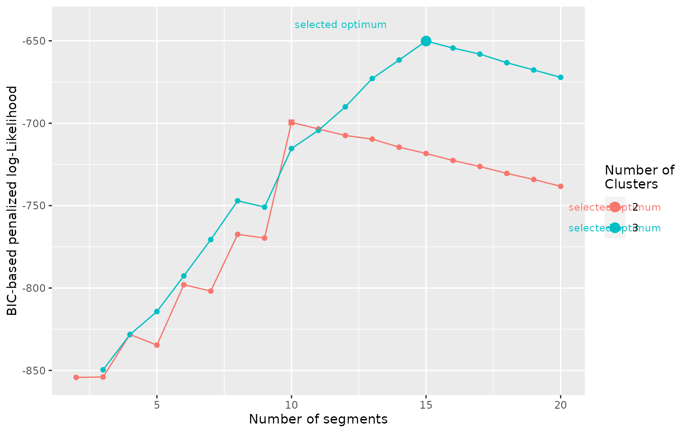

2 - Running Segmentation/Clustering with segclust2d
R. Patin
2022-09-06
Source:vignettes/v02_run_segclust2d.Rmd
v02_run_segclust2d.RmdThe package segclust2d provides access to two
algorithms:
It can perform a segmentation of the time-series into homogeneous segments. A typical case is the identification of home-range shifts
It can also perform an integrated classification of those segments into clusters of homogeneous behaviour through a segmentation/clustering algorithm. This can be used to identify behavioural modes.
Input data used in the examples here is a data.frame
object but it can also be a Move object, a
ltraj object (from package adehabitatLT) or a
sftraj object, both shown in section Preparing
data for Segmentation/Clustering with segclust2d
Presentation of data sets
simulshift: three successive home-range shifts
data(simulshift)Here we will load a test dataset: simulshift, containing
a simulation of home-range behaviour with two shifts. It is a data.frame
with two columns for coordinates : x and y. We can now run a simple
segmentation with this dataset to find the different home-ranges.

simulshift: simulation of movement within three successive
home-range. Data shown after subsampling by 100.
simulmode: a simulation with three movement modes
data(simulmode)
simulmode$abs_spatial_angle <- abs(simulmode$spatial_angle)
simulmode <- simulmode[!is.na(simulmode$abs_spatial_angle), ]simulmode is an example dataset containing a movement
simulation with three movement modes. It is a data.frame with 11
columns, with location coordinates and several covariates. In addition
to loading we calculated here the absolute value for the turning angle
at constant step length (here called spatial_angle). Data
are also checked for missing values.

simulmode: simulation of movement with three different
behavioural modes.
Segmentation
Setting segmentation() parameters.
Required: lmin: minimum length of a segment
To run the segmentation() function, argument
lmin needs to be provided. lmin is the minimum
length of a segment. It is has to be set not only to speed up the
algorithm, but also, more fundamentally, to prevent over‐segmenting,
based on biological considerations. For example, setting
lmin to a value of a few weeks when analysing locational
time series will prevent the algorithm from considering an area
exploited only for a few days, corresponding to foray outside the usual
home range or to stopover during migration, as a distinct home range.
Similarly, setting lmin to a value long enough (depending
on the species) when looking for changes of behavioural modes will force
the algorithm to assign a given behavioural bout to a given mode even
when it is interspersed by ephemeral events related to another behaviour
(e.g. a long transit with opportunistic short feeding events on the move
will be considered as a single transit phase).
Statistically, lmin cannot be <5,
because of the need to estimate variances for each segment. To avoid
such case, the program will fix lmin to a minimum of 5.
Optional: Kmax: the maximum number of segments.
By default, Kmax will be set to
0.75*floor(n/lmin), with n the number of
observations, so you can omit this argument. You can however provide a
different value, as a large value may compromise speed or selection of
optimal number of segments.
Optional: seg.var
You can specify the variables to be segmented using argument
seg.var. By default, function segmentation will use
variables x and y for a data.frame or use the
coordinates for move and ltraj objects.
Optional: scale.variable
The function allow rescaling of variable with argument
scale.variable. Rescaling sets variable in
seg.var to a mean of 0 and a variance of 1. It is
recommended if the variables chosen for segmentation are of different
nature (e.g. speed and turning angle). It is therefore inadvisable for
segmentation of coordinates to identify home-ranges. By default
segmentation() disables rescaling and sets
scale.variable = FALSE.
Optional: diag.var
segmentation() uses variables provided in
seg.var and automatically produces summary statistics for
each variable and each segments (mean and standard deviation). In case
you want summary statistics for other variables than
seg.var you can specify them in diag.var. By
default diag.var is set to seg.var.
Optional: order.var
order.var is the variable used for ordering segments in
some of the output functions (see section Exploring
Outputs from segclust2d for details.). By default
order.var is set to seg.var[1]
Deprecated: type, coord.names
Older version of segclust2d had different arguments, now
deprecated. type was either "home-range" or
"behaviour", which provided different default
arguments:
-
type = "home-range"was associated withscale.variable = FALSEand performed a segmentation based on the variables proposed ascoord.names. Default value wascoord.names = c("x","y"). -
type = "behaviour"was associated with,scale.variable = TRUEand performed a segmentation based on the variables proposed asseg.var, with no default value.
From version 0.3.0 and forward, those arguments were removed so that
the functions now work only with arguments scale.variable
and seg.var. Using the arguments type makes
the function fail and triggers message explaining the required
changes:
df.seg <- segmentation(simulshift,
type = "home-range",
lmin = 300, Kmax = 10,
subsample_by = 60)#> ✖ Argument type is deprecated and should not be used
#> ✖ Argument coord.names is deprecated and should not be used
#> → Please use instead seg.var = c("x", "y") and scale.variable = FALSERunning segmentation()
segmentation() uses a Dynamic Programming algorithm that
finds the best segmentation given a number of segments. The function
runs the dynamic programming for each number of segments
<Kmax. As a result, the optimal segmentation is
associated with a likelihood value for each number of segment. Section
Different running
configurations shows several examples of running
segmentation() with different options. Section Selecting the number of
segments discusses the selection of the number of segments using
either Lavielle’s criterium or graphical explorations.
Different running configurations
In this section we will try different ways of calling the
segmentation() function. Minimal call only contains the
data concerned (here the data.frame simulshift) and
argument lmin. The function will automatically complete the
missing arguments with default values and communicate about it (not
shown here).
subsample_by argument is described in section Subsampling
shift_seg <- segmentation(simulshift,
lmin = 240,
subsample_by = 60)It is however advised to give a more reasonable ‘Kmax’ value to decrease calculation time.
shift_seg <- segmentation(simulshift,
lmin = 240, Kmax = 25,
subsample_by = 60)There is a check to ensure that lmin*Kmax < n with
n the number of data. If you provided inadequate values,
Kmax will be adjusted to an appropriate value if possible
and you should get a message like this:
#> ! Adjusting Kmax so that lmin*Kmax < nrow(x). Now, Kmax = 25If not possible you will get an error and this message:
#> ✖ lmin*Kmax > nrow(x) and Kmax cannot be adjusted. Please provide lower values for lmin
#> Error in eval(expr, envir, enclos): lmin*Kmax > nrow(x)By default the function is looking for column c(x,y) or
the coordinates (in the case of a Move or a
ltraj object). Alternatively the user can provide its own
variables, depending on its aim:
shift_seg <- segmentation(simulshift,
seg.var = c("x","y"),
lmin = 240, Kmax = 25,
subsample_by = 60)Selecting the number of segments
Once the segmentation have been successfully run, a summary like this will appear
#> ✔ Best segmentation estimated with 3 segments, according to Lavielle's criterium
#> Other number of segments may be selected by looking for likelihood breaks with
#> plot_likelihood()
#> Results of the segmentation may be explored with plot() and segmap()By default, the algorithm chooses the number of segments given a
criterium developed by Marc Lavielle based on the value of the second
derivative of the penalized likelihood. This criterium uses a threshold
value of S = 0.75, but a different threshold can be
specified to segmentation() if needed.
As stated it is important to check that the number of segments
selected corresponds to a clear break in log-likelihood and if it is not
the case to select a better value. This can be checked with
plot_likelihood that shows the log-likelihood of the best
segmentation versus the number of segments and highlights the one chosen
with Lavielle’s criterium. The likelihood should show an increasing
curve with a clear breakpoint for the optimal number of segments. Note
that with real data breaks are often less clear than for that example.
An artifactual decrease of likelihood can happen for large number of
segments when Kmax is too high (close to n/lmin) and
corresponds generally to an oversegmentation (in such case, Kmax should
be decreased).
plot_likelihood(shift_seg)
Another example on the simulmode dataset shows a
situation where the number of segments automatically selected by
Lavielle’s criterium is 1, despite a (relatively) clear break in the
likelihood at nseg = 15. In such case it is of paramount
importance to explore the log-likelihood to confirm or select an
appropriate number of segments.
Note that in this case the problem in the selection of the number
of segments would have been avoided by setting Kmax = 25.
For Lavielle’s criterium to work properly Kmax should be
clearly larger than your expected number of segment.
mode_seg <- segmentation(simulmode,
lmin = 10, Kmax = 20,
seg.var = c("speed","abs_spatial_angle"),
scale.variable = TRUE)
plot_likelihood(mode_seg)
Segmentation-Clustering
We will now run the joint segmentation/clustering
segclust() function on the simulmode data to identify the
different behavioural modes. As with segmentation(), you
can specify the variables to be segmented using argument
seg.var.
Setting segclust() parameters.
segclust() shares most of its parameters with
segmentation() so you can read section Setting
segmentation() parameters. for the parameters missing
description here. The only additional parameter is the number of
clusters to be tested.
Required: ncluster: the number of clusters
ncluster is an argument required for
segclust(). The user can provide a vector of values or a
single value. The algorithm provides a BIC-criterium to select the
number of clusters, although it is advised to select it based on
biological knowledge.
Running segclust()
Different running configurations
In this section we will try different ways of calling the
segclust() function. Minimal call only contains the data
concerned (here the dataframe simulmode) as well as
arguments lmin, ncluster and
seg.var. The function will automatically complete the
missing arguments with default values and communicate about it (not
shown here).
mode_segclust <- segclust(simulmode,
Kmax = 20, lmin=10,
ncluster = c(2,3),
seg.var = c("speed","abs_spatial_angle"))Additionally it is advised to scale the variables used to a mean of 0
and a variance of 1. This will automatically be done for
segclust(), but can also be specified explicitly:
Selecting the number of clusters and segments.
Once the segmentation/clustering have been successfully run. A summary like this will appear:
#> ✔ Best segmentation/clustering estimated with 3 clusters and 15 segments according to BIC
#> → Number of clusters should preferentially be selected according to biological
#> knowledge. Exploring the BIC plot with plot_BIC() can also provide advice to
#> select the number of clusters.
#> → Once number of clusters is selected, the number of segments can be selected
#> according to BIC.
#> → Results of the segmentation/clustering may further be explored with plot()
#> and segmap()As stated, the number of clusters should preferentially be selected
based on biological knowledge. Exploration of the BIC-based penalized
log-likelihood can also help selecting an appropriate number of
clusters, with the function plot_BIC(). Best-case scenario
is as below, the BIC shows a steep increase up to a maximum and a slow
decrease after the optimum and one number of clusters is clearly above
the others.
plot_BIC(mode_segclust)
With real data, a larger number of clusters almost always improves
the penalized-likelihood so it will generally be a poor indication of
the appropriate number of clusters. Such situation may be shown with our
dataset simulmode indeed, if we allow the number of
clusters to be tested between 2 and 5 instead of a maximum at three, we
obtain the following BIC curve:
mode_segclust <- segclust(simulmode,
Kmax = 20, lmin=10,
ncluster = 2:5,
seg.var = c("speed","abs_spatial_angle"),
scale.variable = TRUE)
plot_BIC(mode_segclust)
In the curve above we see that the optimum number of clusters
selected is 4, despite the difference being relatively small compared to
ncluster = 3 and to the evolution with the number of
segments. In addition, if we look at the results of the segmentation we
can see identical segment distribution, the only difference is that
state 2 in the segmentation with 3 clusters is divided into state 2 and
3 in the segmentation with 4 clusters:
plot(mode_segclust, ncluster = 3)
plot(mode_segclust, ncluster = 4)
More generally, as in this example, if the selected number of segments for a higher number of clusters is the same, then the lower number of clusters should be favored.
Once the number of clusters have been selected, the number of segments can be selected with the BIC criterium. When the segmentation-clustering is reliable, the selected optimum should be a maximum just before a linear drop of the penalized log-Likelihood as in the examples above. With real data the signal is seldom as clear and may require adjustment based on exploration of the realized segmentation/clustering.